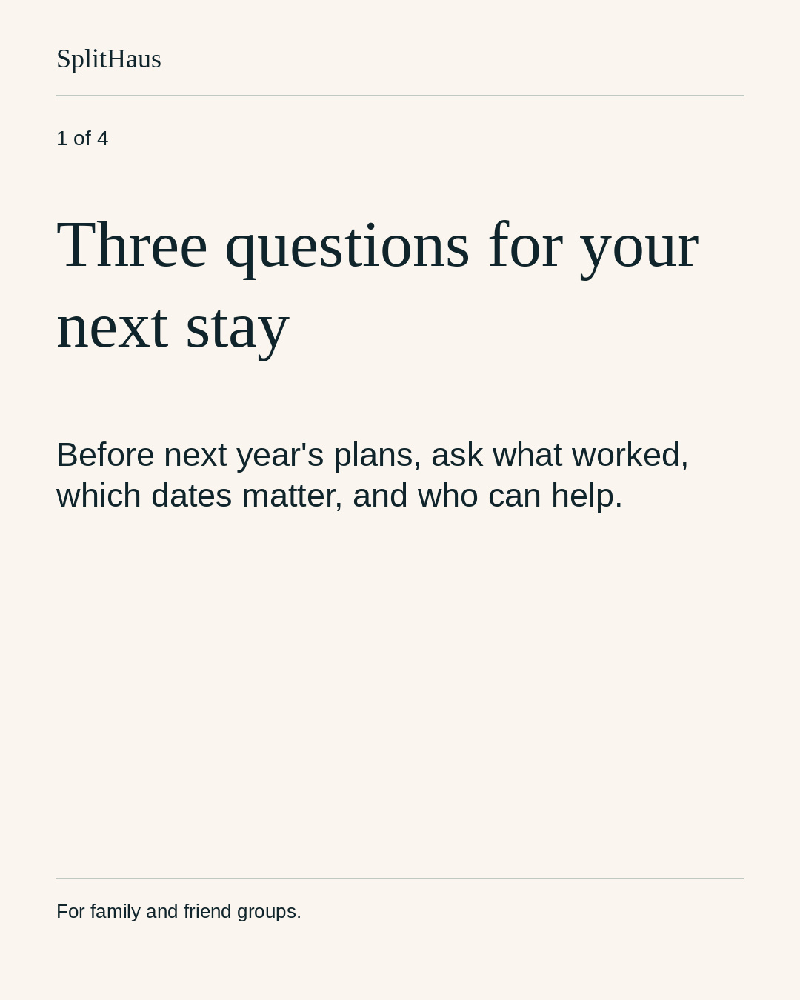
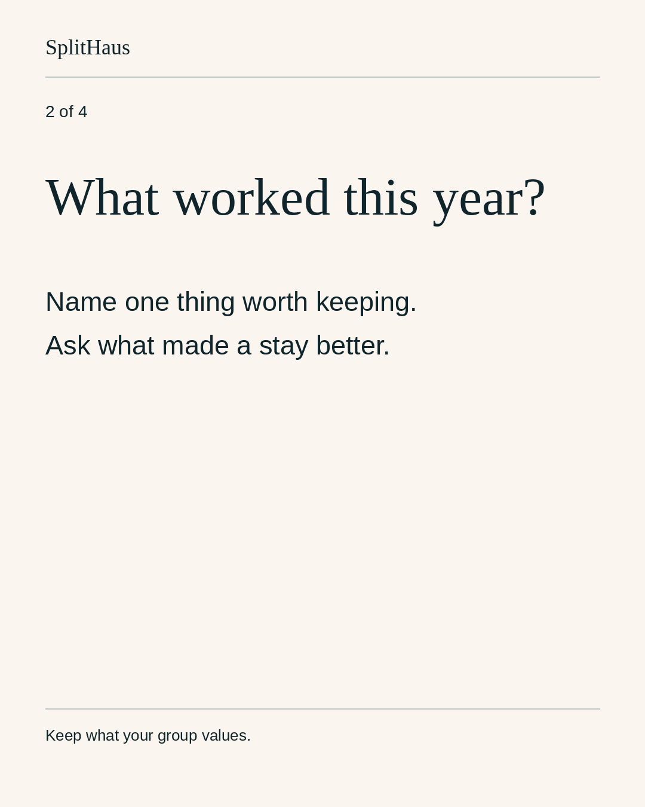
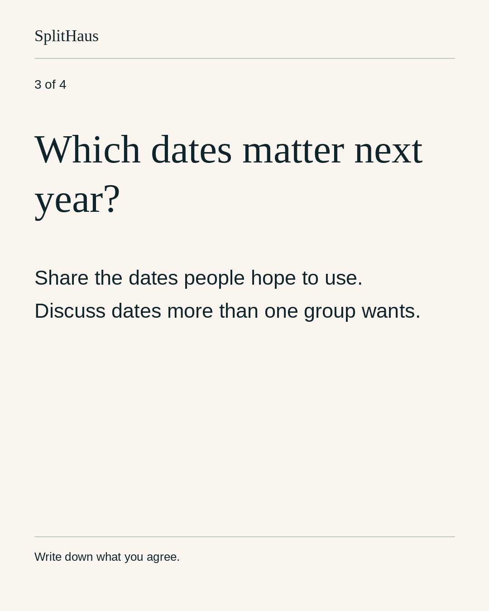
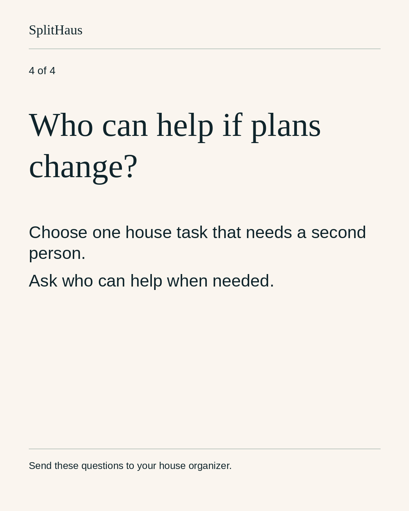
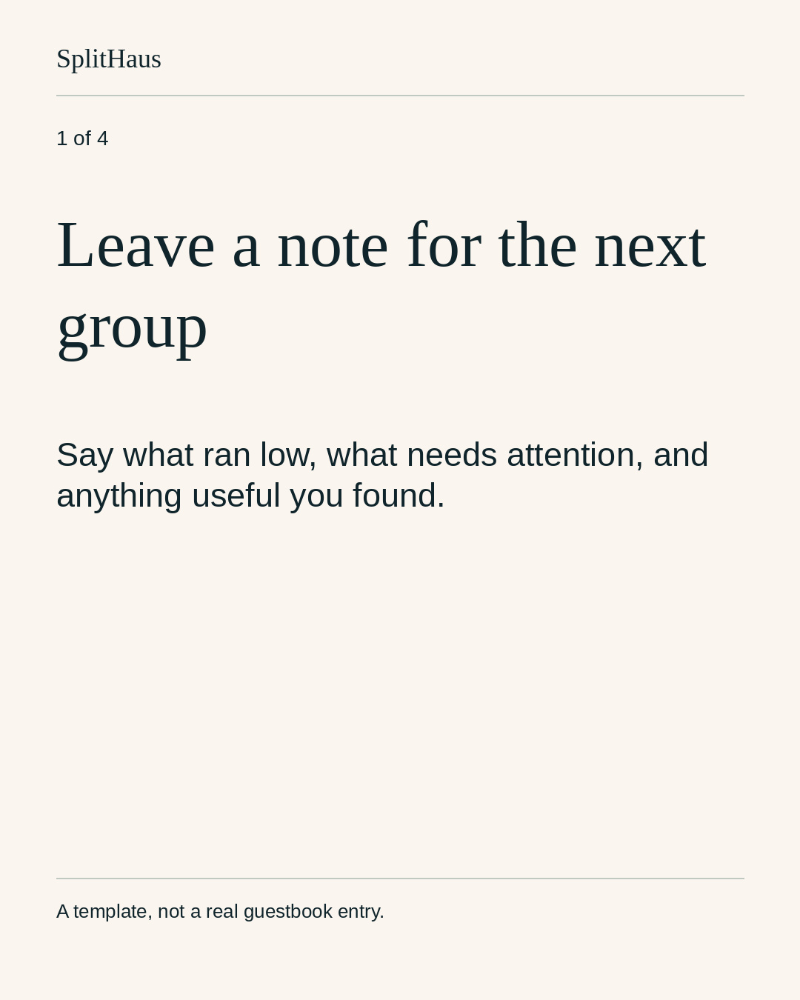
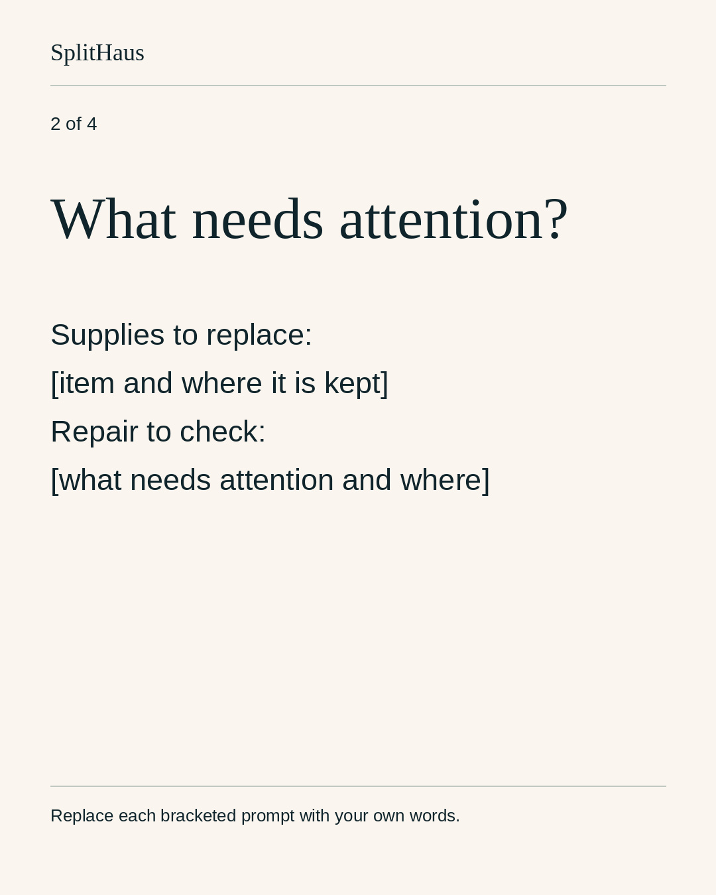
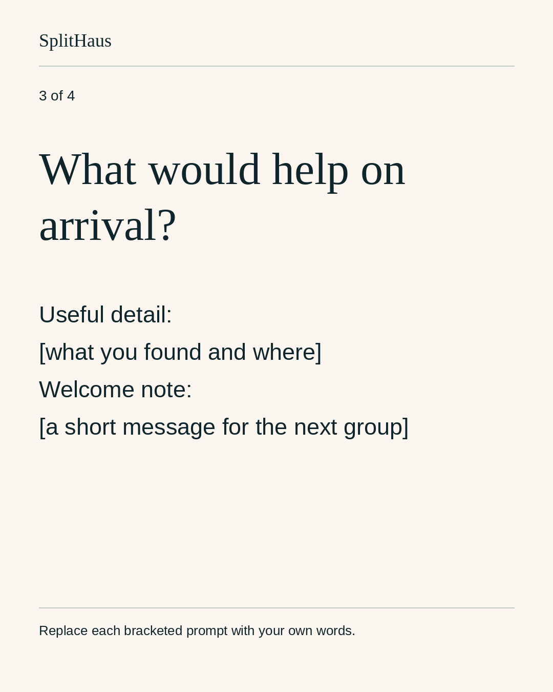
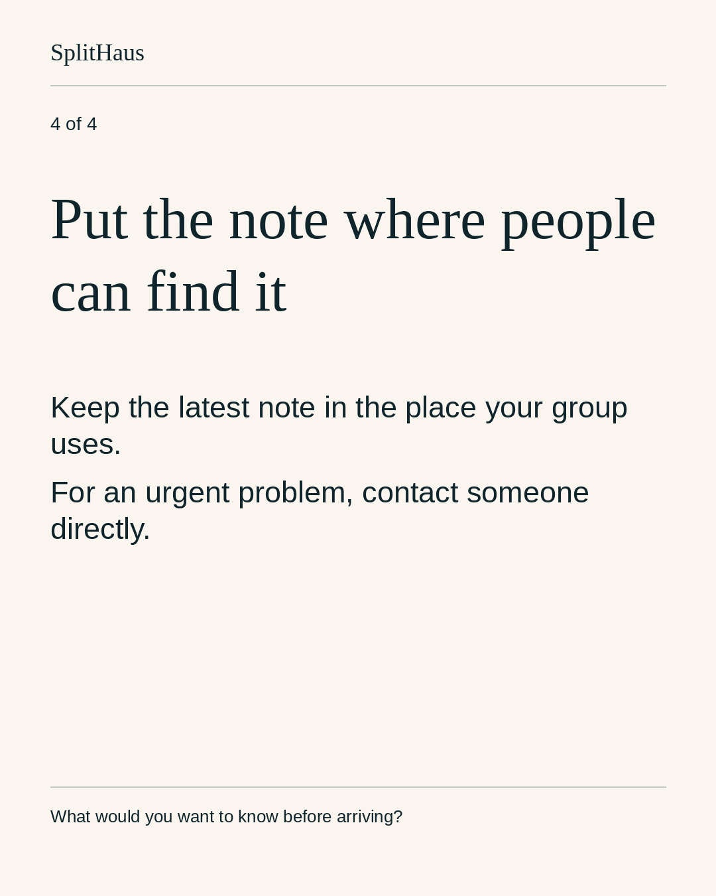
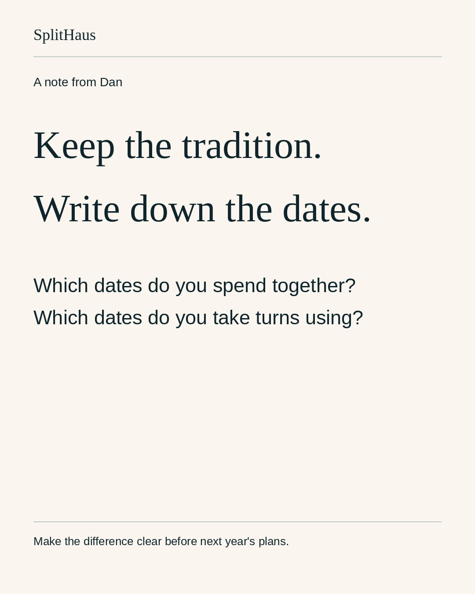

Decision requested: approve these exact captions, nine original cards and unchanged Episode5 cut for the accounts and times shown. Please decide specifically on the existing Heartwarming piano mix. Earlier text approval does not approve new media.
Episode5: The Calendar
69.08-second narrated fictional story, not a founder memory or customer testimonial. Present day: January2027. Requested wedding: July4,2027. Adult founders flashback: July4,1956. Existing commissioned animation, narration and music are unchanged.
SHA-256: 7bb0ad08a1f39b42d153dd1a608623f505b50eec2c4d2771cd5e55aa7aea4431
Music: "Heartwarming" by Kevin MacLeod (https://incompetech.com), CC BY4.0: https://creativecommons.org/licenses/by/4.0/ . Excerpted and mixed under narration.
Exact export fully decodes with audio. Eight source narration files match current script and generation-time paid-plan receipt. This does not certify YouTube upload-specific Content ID. Technical readiness and exact creative approval remain separate.
Instagram: brand feed and Dan founder/conditional Story
IG-SH-13 | @splithaushq
2026-11-16T12:00:00-08:00 Pacific | STAGED_NOT_SUBMITTED

Media SHA-256: 2ccc23a84ff4a09f3b62f23f52de774b82935e791e18ab1c21948ffbdf6c0d0f

Media SHA-256: cef400664b11f5d5a9bbc0cfc7f22da33a6ab6ebea049bb6bfe8949931649b91

Media SHA-256: b71a0740a260985e231a15c2bf52bea7a44fc12e4b81c9cf37381b0812ce3de2

Media SHA-256: 4d1805511227ac7749d18a469f2bfc82e4816f2d9078848505dc431ebc428132
Before next year's house plans, bring three questions to your next stay:
What worked this year?
Which dates matter next year?
Which house task needs someone else who can help?
Keep what works. Write down what your group agrees.
Send this to your house organizer.
Caption SHA-256: 26c48f8d5f384ccdb9fb526fc47d6d1852a3bbcdbcdbe01546f6ed78518d2aae
IG-SH-14 | @splithaushq
2026-11-18T18:00:00-08:00 Pacific | STAGED_NOT_SUBMITTED

Media SHA-256: e9522eac68e19f369d9efd965ad42c83aa936fe1e176e9515047f0c2aa2074b1

Media SHA-256: e4beae52437555a8f265ec53adc8c29d58739f99d052a966d8ecad784fbbb7e3

Media SHA-256: 3f3a34108ba22eeebcc785be968ed38b9b8f961fa2da77c62284ffdbfaee0792

Media SHA-256: 473559d68c4160488faafd0cc335eb8a6c6a5e78fdd47be9254c7ba02def2c94
Leave a note for the next group.
What ran low? What needs attention? Did you find something useful that others should know? Add a welcome, too.
Use the cards as a template. Replace each bracketed prompt with your own words, then leave the note where your group will find it. Contact someone directly about an urgent problem.
What would you want to know before arriving?
Caption SHA-256: 47b5f0911c6e49a4c8887fe37584c2bfe80c32b9a075bca76189c840448ea3d4
Original text-only template, not an invented guestbook quotation or an unapproved house photograph. Proposed creative requires exact review.
DANIG-05-TUE | @danatsplithaus
2026-11-17T18:00:00-08:00 Pacific | STAGED_NOT_SUBMITTED

Media SHA-256: 43c92a22a804744ab3b66a76d4d2880a889777afdc92de416f225132fab94514
A tradition and a booking rule are not always the same thing.
Which dates does your group spend together, and which dates do you take turns using? Writing down the difference can make next year's plans clearer.
Caption SHA-256: 96e7d774ff6c5cf5564ec223d4757e5cdbfc3d400585da70f16d2e15e7472a14
Dan Instagram supported authenticated path remains unverified. Do not retry challenged login or link portfolio.
DANIG-05-FRI | @danatsplithaus
2026-11-20T18:00:00-08:00 Pacific | STAGED_NOT_SUBMITTED
How does your group handle two plans for the same week?
Our Loon Point story is over at @splithaushq.
Caption SHA-256: fa0ed1872c1cfbc0180f1cd57edaacf28f8c03f1dbca3c414ec779bcaa692699
Native reshare only after exact IG-SH-15 is independently verified live.
Dan Instagram supported authenticated path remains unverified. Do not retry challenged login or link portfolio.
IG-SH-15 | @splithaushq
2026-11-20T12:00:00-08:00 Pacific | STAGED_NOT_SUBMITTED
Media SHA-256: 7bb0ad08a1f39b42d153dd1a608623f505b50eec2c4d2771cd5e55aa7aea4431
How does your group handle two plans for the same week?
The Houses / Loon Point 05: The Calendar. An original animated story from SplitHaus.
Music: "Heartwarming" by Kevin MacLeod (https://incompetech.com), CC BY 4.0: https://creativecommons.org/licenses/by/4.0/ . Excerpted and mixed under narration.
Caption SHA-256: 6c9f40d0e0d61ad75c4dde73d4366569762d168f260c25d2e9b725433da1d2f6
X: Dan only. No duplicate brand-X lane.
X-SH-15 | @danatsplithaus
2026-11-20T12:00:00-08:00 Pacific | STAGED_NOT_SUBMITTED
Media SHA-256: 7bb0ad08a1f39b42d153dd1a608623f505b50eec2c4d2771cd5e55aa7aea4431
Two plans for the same week. What happens next? Loon Point 05: The Calendar. An animated story from SplitHaus.
Music: Heartwarming, Kevin MacLeod, https://incompetech.com, CC BY 4.0 https://creativecommons.org/licenses/by/4.0/ (excerpted/mixed).
Caption SHA-256: d42c17a51224e51ad601aeee0150654ad564102f1662e7aa6e3285a376cacb9c
X-SH-13 | @danatsplithaus
2026-11-16T12:00:00-08:00 Pacific | EXISTING_APPROVED_TEXT_PRESERVED
Three questions for the next house conversation:
What worked this year?
Which dates matter next year?
Which job needs a backup person?
Start there, not with a completely rewritten rulebook.
Caption SHA-256: 190aca4afd17cceedfcb5abf6d9f11e10ac5138dcede603592c287c039b5e5dd
Existing runtime text unchanged; no queue mutation.
X-SH-14 | @danatsplithaus
2026-11-18T18:00:00-08:00 Pacific | EXISTING_APPROVED_TEXT_PRESERVED
Leave a note for the next group: what ran low, what broke, and anything useful you discovered. What would you want to know before arriving?
Caption SHA-256: 34ad0b94c5d30bac0712b85c2dd92122c983ffe6d71d7f0cc5c9c0a8b7196d2d
Existing runtime text unchanged; no queue mutation.
Facebook: SplitHaus Page
FB-SH-13 | SplitHaus Page
2026-11-16T12:00:00-08:00 Pacific | STAGED_NOT_SUBMITTED
Media SHA-256: 2ccc23a84ff4a09f3b62f23f52de774b82935e791e18ab1c21948ffbdf6c0d0f
Media SHA-256: cef400664b11f5d5a9bbc0cfc7f22da33a6ab6ebea049bb6bfe8949931649b91
Media SHA-256: b71a0740a260985e231a15c2bf52bea7a44fc12e4b81c9cf37381b0812ce3de2
Media SHA-256: 4d1805511227ac7749d18a469f2bfc82e4816f2d9078848505dc431ebc428132
Before next year's house plans, bring three questions to your next stay:
What worked this year?
Which dates matter next year?
Which house task needs someone else who can help?
Keep what works. Write down what your group agrees.
Send this to your house organizer.
Caption SHA-256: 26c48f8d5f384ccdb9fb526fc47d6d1852a3bbcdbcdbe01546f6ed78518d2aae
FB-SH-14 | SplitHaus Page
2026-11-18T18:00:00-08:00 Pacific | STAGED_NOT_SUBMITTED
Media SHA-256: e9522eac68e19f369d9efd965ad42c83aa936fe1e176e9515047f0c2aa2074b1
Media SHA-256: e4beae52437555a8f265ec53adc8c29d58739f99d052a966d8ecad784fbbb7e3
Media SHA-256: 3f3a34108ba22eeebcc785be968ed38b9b8f961fa2da77c62284ffdbfaee0792
Media SHA-256: 473559d68c4160488faafd0cc335eb8a6c6a5e78fdd47be9254c7ba02def2c94
Leave a note for the next group.
What ran low? What needs attention? Did you find something useful that others should know? Add a welcome, too.
Use the cards as a template. Replace each bracketed prompt with your own words, then leave the note where your group will find it. Contact someone directly about an urgent problem.
What would you want to know before arriving?
Caption SHA-256: 47b5f0911c6e49a4c8887fe37584c2bfe80c32b9a075bca76189c840448ea3d4
Original text-only template, not an invented guestbook quotation or an unapproved house photograph. Proposed creative requires exact review.
FB-SH-15 | SplitHaus Page
2026-11-20T12:00:00-08:00 Pacific | STAGED_NOT_SUBMITTED
Media SHA-256: 7bb0ad08a1f39b42d153dd1a608623f505b50eec2c4d2771cd5e55aa7aea4431
How does your group handle two plans for the same week?
The Houses / Loon Point 05: The Calendar. An original animated story from SplitHaus.
Music: "Heartwarming" by Kevin MacLeod (https://incompetech.com), CC BY 4.0: https://creativecommons.org/licenses/by/4.0/ . Excerpted and mixed under narration.
Caption SHA-256: 6c9f40d0e0d61ad75c4dde73d4366569762d168f260c25d2e9b725433da1d2f6
YouTube: episode only
YT-SH-15 | @splithaus
2026-11-20T12:00:00-08:00 Pacific | STAGED_NOT_SUBMITTED
Media SHA-256: 7bb0ad08a1f39b42d153dd1a608623f505b50eec2c4d2771cd5e55aa7aea4431
The Houses / Loon Point 05: The Calendar. An original animated story about sharing a house.
How does your group handle two plans for the same week?
Music: "Heartwarming" by Kevin MacLeod (https://incompetech.com), CC BY 4.0: https://creativecommons.org/licenses/by/4.0/ . Excerpted and mixed under narration.
Caption SHA-256: 80926ed669741b9588d787e5d0257a81512b418d001771426f54cf79e880aa32
Two plans, one week | Loon Point 05
YouTube secure publishing is unverified; exact over-one-minute export needs upload/Content ID preflight.
All seven days
2026-11-16
IG-SH-13 12:00 @splithaushq | FB-SH-13 12:00 SplitHaus Page | X-SH-13 12:00 @danatsplithaus
2026-11-17
DANIG-05-TUE 18:00 @danatsplithaus
2026-11-18
IG-SH-14 18:00 @splithaushq | FB-SH-14 18:00 SplitHaus Page | X-SH-14 18:00 @danatsplithaus
2026-11-19
No fixed release. No automatic extra post or weekend repost.
2026-11-20
DANIG-05-FRI 18:00 @danatsplithaus | IG-SH-15 12:00 @splithaushq | FB-SH-15 12:00 SplitHaus Page | X-SH-15 12:00 @danatsplithaus | YT-SH-15 12:00 @splithaus
2026-11-21
No fixed release. No automatic extra post or weekend repost.
2026-11-22
No fixed release. No automatic extra post or weekend repost.
Protected native schedules: no changes proposed. Dan Instagram and YouTube are explicit delivery exceptions, not claimed operational. The Friday founder Story depends on the actual verified brand Reel. Existing original Dan X-SH-13 and X-SH-14 text authority is preserved separately. Please reply in the weekly Slack thread with owner-v1 approval or changes by delivery ID.